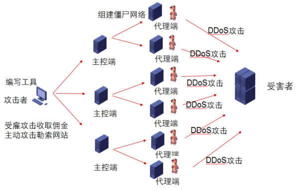

H3CSE-Security(GB0-550)学习笔记
第一章 部署内容安全概述
1. 部署内容安全概述
1）何为内容安全?
内容安全顾名思义就是提供应用层安全防护
2）内容安全所面临的挑战
DDoS是Distributed Denial of Service的简称，即分布式拒绝服务，此攻击指借助于客户/服务器技术，将多个计算机联合起来作为攻击平台，对一个或多个目标发起DDoS攻击，从而成倍地提供拒绝服务攻击的威力。
Denial of Service的简称，即拒绝服务，造成DoS的攻击行为被称为DoS攻击，其目的是使计算机或网络无法提供正常的服务。不同于其他的留有木马后门或劫持数据的方式，DoS攻击并不威胁敏感数据，只是使合法用户不能获得应用的服务。
2) Web应用风险
十大Web应用安全风险
A1—注入 （Injection）：是指攻击者通过输入恶意数据，从而达到在Web服务器环境下运行任意指令的目的。比较有名的是SQL、XML和LDAP注入。在应用程序中，通过对用户输入的特定字符进行转义，可以预防恶意数据的注入。
A2—跨站脚本 （Cross-Site Scripting，XSS）：是指应用程序在没有对用户输入进行正确验证的情况下，将这些输入直接输出到了Web浏览器中，而这些输入一旦被浏览器执行，将有可能导致会话劫持、cookie窃取或者Web站点数据被污染。在应用程序中，通过对HTML、JavaScript或者CSS输出中不受信任的元字符进行转义，可以预防跨站脚本。
A3—无效的验证和会话管理 （Broken Authentication and Session Management）：使用不安全的验证和会话管理程序，可能会导致用户账户被劫持，或者导致会话token可预测。开发一个健壮的验证和会话管理程序可以预防此类攻击。我们强烈建议使用加密、散列和基于SSL或者TLS的安全数据连接。
A4—不安全的直接对象引用： 如果应用程序提供其内部对象的直接引用，并且没有进行正确验证，那么可能会导致攻击者操纵这些引用并访问未经授权的数据。这个内部对象可能是用户账户的参数值、文件名或者目录。在访问控制检查（access control check）完成之前，限制所有用户可访问的内部对象，可以确保对相关对象的每一次访问都是经过验证的。
A5—跨站请求伪造 （Cross-Site Request Forgery ，CSRF）：是指在存在漏洞的Web应用中，强迫经过验证的用户去运行伪造的HTTP请求。这些恶意请求都是在合法的用户会话中被执行的，因此无法检测到。通过在每一个用户会话中都生成一个不可预测的token，然后每次发送HTTP请求时都绑定这个token，可以减轻CSRF攻击的危害。
A6—错误的安全配置 （Security Misconfiguration）：有时候，使用默认的安全配置可能会导致应用程序容易遭受多种攻击。在已经部署的应用、Web服务器、数据库服务器、操作系统、代码库以及所有和应用程序相关的组件中，都应该使用现有的最佳安全配置，这一点至关重要。通过不断地进行软件更新、打补丁、从严制定应用环境中的安全规则，可以实现安全的应用程序配置。
A7—不安全的密码存储 （Insecure Cryptographic Storage）：那些没有对敏感数据（例如医保信息、信用卡交易、个人信息、认证细节等）使用密码保护机制的应用程序，都可以归到这类中。通过使用健壮的标准加密算法或散列算法，可以保障数据的安全性。
A8—失败的URL访问权限限制 （Failure to Restrict URL Access）：如果Web应用程序没有对URL的访问进行权限检查，那么攻击者可能可以访问未经授权的网页。为了解决这个问题，需要运用合适的身份证明和授权控制机制来限制对私有URL的访问，同时需要为那些可以访问高敏感性数据的特殊用户和角色开发一套合适的权限控制策略。
A9—薄弱的传输层保护 （Insufficient Transport Layer Protection）：使用低强度的加密算法、无效的安全证书以及不恰当的身份证明控制机制，会破坏数据的机密性和完整性。这些应用数据将有可能遭到流量窃听和篡改攻击。通过在传输所有敏感网页时使用SSL协议，并使用权威认证机构颁布的合法数字证书，可以解决这类安全问题。
A10—未验证的重定向和转发 （Unvalidated Redirects and Forwards）：很多Web应用程序使用动态参数将用户重定向或者转到某个特定的URL上。攻击者可以通过相同的方法伪造一个恶意的URL，将用户重定向到钓鱼网站或者恶意站点上。这种攻击方式还可以用于将请求转发到本地未经授权的网页上。要想避免非法重定向和转发，只需要简单地验证请求中的参数和发出请求的用户的访问权限。
3）漏洞
漏洞是指一个系统存在的弱点或缺陷，系统对特定威胁攻击或危险事件的敏感性，或进行攻击的威胁作用的可能性。漏洞可能来自应用软件或操作系统设计时的缺陷或编码时产生的错误，也可能来自业务在交互处理过程中的设计缺陷或逻辑流程上的不合理之处。这些缺陷、错误或不合理之处可能被有意或无意地利用，从而对一个组织的资产或运行造成不利影响，如信息系统被攻击或控制，重要资料被窃取，用户数据被篡改，系统被作为入侵其他主机系统的跳板。从目前发现的漏洞来看，应用软件中的漏洞远远多于操作系统中的漏洞，特别是WEB应用系统中的漏洞更是占信息系统漏洞中的绝大多数。
3.内容安全需求
安全隔离与信息交换
运维安全
数据库安全
运维审计安全
Web应用安全